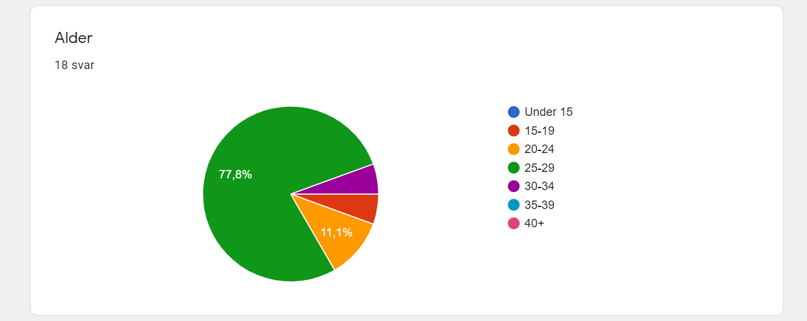
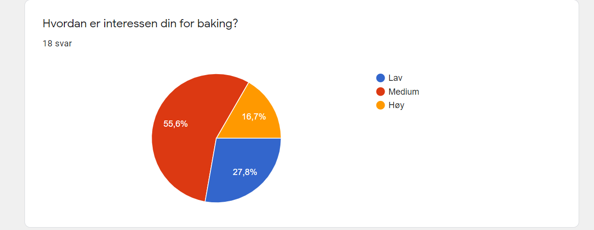
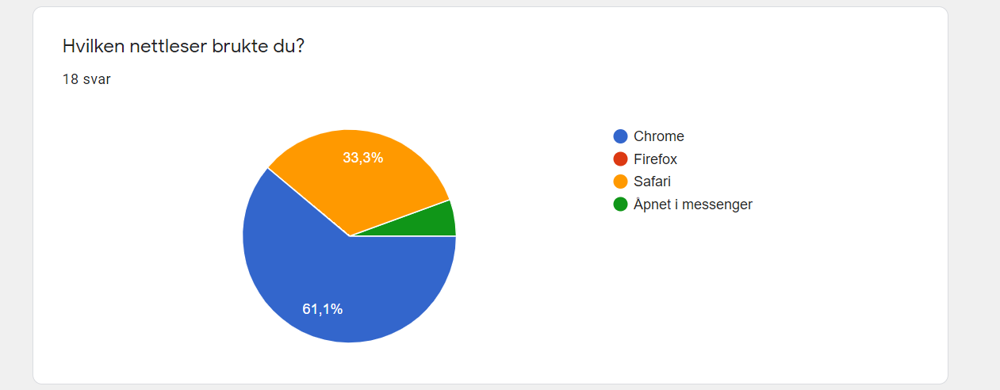

Andreas Realfsen Langnes, Inga Bertelsen, Jeeviga Gunathasan, Stian Gaustad, Tina Wedmark - 05/11/2020
Vi testet med flere metoder; både ved å sende ut et google form og ved fysiske brukertester, der et gruppemedlem hadde ansvar for å observere og ta notater under testen. Vi lagde et google form som testdokument, i tillegg til en mal for mer målrettet testing der testpersonen ble observert. Google-formet inneholdt spørsmål om hva brukeren synes om designet og brukervennligheten av nettsiden. Fysisk testing innebar at brukeren både fikk se seg litt rundt selv, og fikk noen spesifikke oppgaver og scenarioer de skulle teste ut.
Vårt google form har 4 hoveddeler:
Link til form: Google form
For mer fysisk brukertesting ble det laget et annet dokument med spørsmål for brukeren. Her ble testeren først instruert til å “klikke rundt” på siden, deretter ble de presentert for noen spørsmål og scenarioer. Totalt var det syv brukerne som utførte testen.
Spørsmålene til testeren gikk på de ulike delene av siden og funksjoner relatert til disse:
Det var to grupper med testere, én person i en “alpha-test” for å få
umiddelbar feedback og mulighet til å endre åpenbare eller
signifikante problemer som ville hindret andre testere å teste
siden. Den andre gruppen, “beta-test”, ble gjennomført rett etter at
siden var ferdiggjort og tilbakemelding fra alpha-testingen ble sett
igjennom. I tillegg testet vi selv sidene kontinuerlig mens vi
jobbet (hovedsakelig for bugs), da på ulike enheter og i ulike
nettlesere (ulike vindusstørrelser i Chrome, Firefox og Edge på
desktop, Chrome og Safari på mobil, i tillegg til å teste gjennom
emulator i nettleser for andre typer enheter).
Først vil vi presentere google form testgruppen. Testen ble
hovedsakelig gjort på personer i 20-årene, da dette er aldersgruppen
som var definert i P1. Majoriteten av testerne var i aldersgruppen
25-29 (14, 77.8%), resten av testerne var i gruppen 15-19 (1, 5.6%),
20-24 (2, 11.1%), og 30-34 (1, 5.6%).

Generelt virket testerne å ha medium-høy grad av interesse for baking. Flertallet av testerne hadde en medium interesse (10, 55.6%), og 3 (16.7%) hadde høy interesse. Av testerne indikerte 5 (27.8%) at de hadde lav interesse for baking. Selv om det hadde vært foretrukket med interesse for baking fra testerne er deres tilbakemelding fortsatt verdifull for å teste tekniske og brukervennlige aspekter og muligens skape interesse blant testerne. 
Testerne var innenfor ønsket erfaring med baking, da vi ønsket litt til noe tidligere erfaring med baking som definert i P1. Testerne for siden viste enten noe erfaring (7, 38.9%) eller medium erfaring (11, 61.1%).
Selv om det ikke var spesifiert noe kjønnspreferanse i P1 så ble kjønnet til testerne registert. Det var et sterkt flertall kvinner som ga tilbakemelding (14, 77.8%), med bare 4 (22.2%) menn.
For fysisk tester ble det spurt personer som passet inn i målgruppen, og som kunne ha mulighet til å gjennomføre testingen i denne perioden. Det var både kvinner og menn, hovedsakelig i 20-årene, som kunne ha noe interesse for baking. Syv personer utførte livetestingen, kvinne 24, 24, 25 og 29, og mann 24, 25 og 30. Testingen varierte med både desktop og mobil, avhengig av hva som var tilgjengelig. Hvis en tester testet begge ville eksempelvis ikke navigasjon på mobil være et spørsmål hvis testeren alt var kjent med dette fra desktop. Annen spesifikk informasjon om dem ble ikke samlet inn.
Den mest populære enheten som nettsiden ble testet på var mobil med 12 (66.7%) av testerne. Resten av testerene brukte laptop/desktop hvor 2 (11.1%) brukte skjerm mindre enn 15-tommer og 4 (22.2%) på større skjermer. Ingen av testerne brukte tablet for å teste siden.
Benyttet nettleser ble registert fra testerne. Det ble hovedsakelig brukt to nettlesere av testerne, Chrome (11, 61.1%) og Safari (6, 33.3%). En tester åpnet linken direkte i messenger og spesifiserte ikke hvilken nettleser som da ble brukt. 
Selv om det ble satt krav for rask lasting av siden i P2 ble det ikke spurt om type tilkobling. Dette er fordi flere brukere vil benytte mobildata, som er veldig avhengig av hvor personen er, eller så vil brukere i vår målgruppe benytte wifi som de ofte ikke kontrollerer hastighet på selv (på campus eller i en studentbolig). Fra intern testing burde siden laste innenfor satt krav og avvik fra dette regnes til å være så sjeldent at siden ikke burde designes for slike spesielle tilfeller.
Etter analyse av tilbakemeldingene vi har fått, har vi kommet frem til en del fokusområder som vi kunne arbeidet videre med å forbedre. Disse områdene er valgt basert på hva majoriteten av brukerne har kommentert for å gjøre nettsiden og designet mer brukervennlig og tilpasset brukernes behov. Det kom også flere gode og interessante ideer på spesifikke områder vi vil gi en kommentar til.
Som nevnt tidligere, var det en del forvirring rundt sorterings- og filtreringknappen øverst på “Oppskrifter”-siden. På grunn av at det ikke er visuelt tydelig for brukeren at endringer blir gjort, er vi enige i at dette er noe som bør forbedres. En mulig løsning for filtreringsknappene kan være at alle oppskriftene blir vist med én gang, og at brukerne deretter kan velge å filtrere dersom det er ønsket. Alternativt kan knappene “toggles” om hverandre, slik at kun enten “Borghilds” eller “innsendte” vises om gangen. Da er det også et alternativ å legge til en knapp for visning av alle.
For sorteringsknappen kan man legge til en fyllfarge for å vise at den er valgt, eventuelt en annerledes “active” knapp. Det er også mulig å legge til flere alternativer for sortering, og dette kunne vært løst med en eventuell “drop down”-knapp. I tillegg kunne vi lagt til flere kategorier for filtrering, slik at det blir enklere for brukerne å finne frem til det de leter etter, samt at de unngår å få alle resultatene samtidig og et mulig rotete uttrykk. Å velge alfabetisk rekkefølge på oppskriftene er vi med på at ikke gir helt mening, men kunne kanskje vært en defaultinnstilling som sidene kunne lastet inn konsekvent med.
I tillegg er det mulig at vi ville ønsket et eget spesifikt design for mobilversjon her, da knappene tar opp mye plass på mobilsidene.
For baketeknikker er det tre tilbakemeldinger vi vil nevne. Å linke til baketeknikk fra relevante oppskriftssider er en veldig god ide som kunne blitt implementert dersom nettstedet skulle videreutvikles; det hadde gitt en god flyt og gjort det lettere for brukerne å skjønne oppskriften.
En annen tilbakemelding er lite innhold og likt innhold mellom “card” og teknikk-side. Dette mener vi er et biprodukt av at vi lager siden som “proof of concept”. Hvis dette var en faktisk bakeblogg ville det blitt lagt inn mer informasjon på teknikk-siden, som hadde gjort forskjellen mellom “card” innhold og teknikk-sideinnhold veldig tydelig. For å demonstrere kunne vi lagt inn en lengre tekst-eksempel, men vi synes ikke det er nødvendig for å vise hvordan en faktisk side hadde fungert. Til slutt ble det gitt et ønske om kommentarfelt. Det skulle vært mulig å lage et slags kommentarfelt, men uten en database kunne vi ikke lagret kommentarene, og de ville forsvunnet når siden ble oppdatert.
For navigasjon på siden er det lite kommentarer. Det ble kommentert ved google form testing at noen brukere ikke fant knappen for å komme tilbake til forsiden, som var ved å klikke på logoen i navigasjonsbaren. Dette er en ganske vanlig funksjon for moderne nettsted, men det ville vært lett å lagt til “Forside” i navigasjonsbaren. Så hvis siden skulle forbedres mener vi dette kunne blitt lagt til, å ha flere linker til forsiden sees ikke på som et problem av gruppen. Hvis en slik endring ble gjort ville vi også endret logo i footer til å linke til forside som ble foreslått av en tester, da det er usannsynlig at brukere som ikke ønsker å gå til forside hadde trykket logoen i footer ved en feil. I tillegg kunne en søkefunksjon vært en god ide ved videreutvikling av nettsiden, om enn noe mer krevende enn andre funksjoner. Navbaren på små sider baserer seg per nå på at det er få elementer der. Et par nevnte hamburgermeny, og ved å legge til flere elementer ville nok dette vært en naturlig utvikling her. Dette ville også løst “problemet” med elementer som lå rart plassert på “mellomsmå” skjermer. Hamburgermeny er også en vanlig og kjent løsning for små skjermer.
For kontakt oss siden var det få kommentarer. Det kom en kommentar fra alpha-testingen om at alert for hvert felt var irriterende, gruppen så på situasjonen og ble enige om å endre dette før resten av testingen begynte. Skjemavalidering gikk dermed fra å ha alert hvis et felt har ugyldig input, til å bare ha alert når skjemaet “sendes inn”. En bruker fikk ikke epost link på kontakt oss siden for laptop til å fungere, men dette gikk på mobil. Vi har ikke klart å gjenskape problemet på andre maskiner og ingen andre brukere rapporterte lignende problem, vi antar dermed at dette problemet er at brukeren ikke hadde et epost-program på laptop eller et ukjent lokalt problem for brukeren. Det er ikke sett på som et problem vi må endre på, hvilke programmer brukeren har lokalt eller uspesifiserte feil som vi ikke klarer gjenskape blir vanskelig for oss å kontrollere.
I forhold til plassering av feltene i kontaktskjema, hvor det ble foreslått å ha navn og epost før resten av feltene, så ses dette på som en grei endring, men som har veldig liten effekt for brukeren av siden. Hvis siden skulle skapes på nytt nå kunne denne endringen bli implementert men dette er ikke noe som vi anser som viktig å endre på. Det siste forslag for kontakt oss var at ikke alle felt burde være obligatoriske. I dette er gruppen ikke helt enige. Siden er designet så dette skjemaet skal kunne sende meldingen til Borghild. Hvis enkelte av feltene ikke er obligatoriske kan det bli vanskelig for Borghild å se gjennom henvendelsene. Vi ser forsåvidt at man kunne latt navn og epost være frivillige. Selv om det da blir vanskelig for Borghild å be om tilleggsinformasjon eller svare på spørsmål kunne det vært frivillig for innsending av oppskrifter, men totalt sett ønsker vi heller å beholde det som det er.
Ellers var det mindre bemerkninger hvor ulike brukere mente ulike ting. Eksempelvis foretrakk noen slideshow med “sliding” og andre likte at det bare byttet. Slik tenker vi er en smakssak som i denne omgang ikke har større betydning for hvordan siden oppleves.
Generelt synes vi det har vært mange interessante tilbakemeldinger og spennende forslag å få fra testerne, og som nevnt, mange ideer vi absolutt ville tatt med videre dersom dette skulle endres på eller videreutvikles.
Vårt team bestod av studenter med ulike faglige bakgrunner; vi var fire utviklere og én designer, hvor én utvikler hadde noe mer kompetanse fra før av. Med denne tverrfaglige kompetansen innad i teamet, ga det oss et bra utgangspunkt for å dele kunnskapen og å lære fra hverandre. Resultatet av nettsiden, basert på de initielle mockups-ene som ble laget, mener vi er veldig likt. Selv om funksjoner ble utvidet og vi måtte løse problemer vi ikke hadde tenkt på forble siden lik originalt design. Gruppen er meget fornøyde med det arbeidet vi har fått til i løpet av prosessen.
Vi har lært verdien av å ha en fremtidsplan med klare frister og ansvarsområder for ulike oppgaver som skulle bli utført gjennom hele prosessen. Selv om alle disse (interne) fristene ikke alltid ble overholdt presist, var det fint med noen føringer for når oppgavene skulle være ferdig, for at vi skulle komme oss videre og ikke sitte igjen med all arbeidet til slutt. I tillegg var det effektivt å ha tidlig definerte mockups som vi kunne jobbe ut i fra, slik at vi hadde et klart design og mål vi skulle jobbe mot. Vi fikk også et godt innblikk i hvordan vi kan bedre designe prosjekter i fremtiden når vi nå er kjent med hva vi ikke tenkte på og planla under designfasen (P2) (feks. “mobilversjon”).
Alle gruppemedlemmer har hatt hvert sitt ansvarsområde som bygger på deres styrker, samtidig som at vi har prøvd å utfordre oss selv med oppgaver som vi ikke har hatt mye erfaring innen tidligere og bidratt der det har vist seg nødvendig. Gruppearbeidet hadde en myk start på arbeidet hvor vi jobbet mest individuelt, men jobbet nærmere som gruppe når de ulike delene ble satt sammen og nettsiden tok form. Arbeidet har krevd tid og innsats utover enkelte oppsatte arbeidsøkter, men med ivrige gruppemedlemmer har det stort sett gått fint. Generelt har gruppemedlemmene vært flinke til å ta initiativ og å jobbe på, spesielt etter den litt treg oppstarten, og det har vært rom for å diskutere, stille spørsmål og å få hjelp av hverandre. Det var litt uvant med Git i starten for enkelte, og å “skrive kode adskilt, men sammen med andre”, men dette gikk selv veldig til etter hvert og hjalp nok på produktiviteten det også.
Det har også vært interessant med feedback fra testere - og spesielt å se hvordan det som var fungerende løsninger for gruppemedlemmene ikke var like fungerende eller intuitive for brukerne. Noe hadde vi tenkt på på forhånd, mens andre ting hadde vi ikke, men som regel var det heldigvis åpenbart for oss hva testerne mente da de sa det.